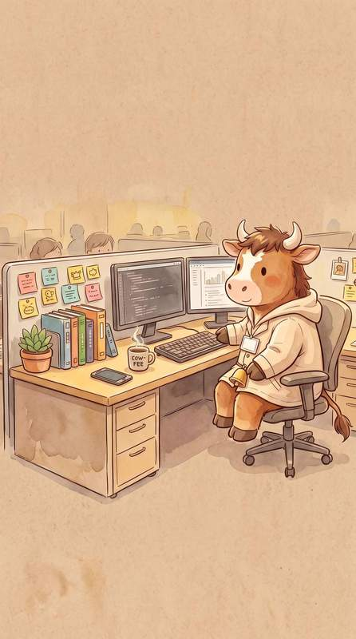
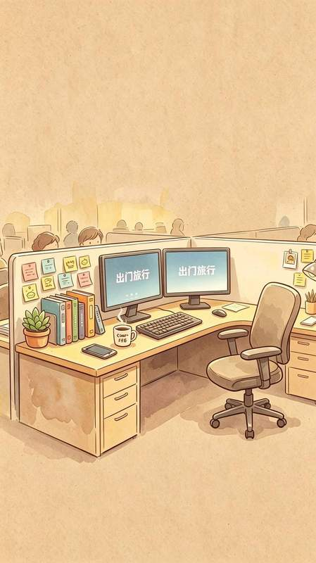
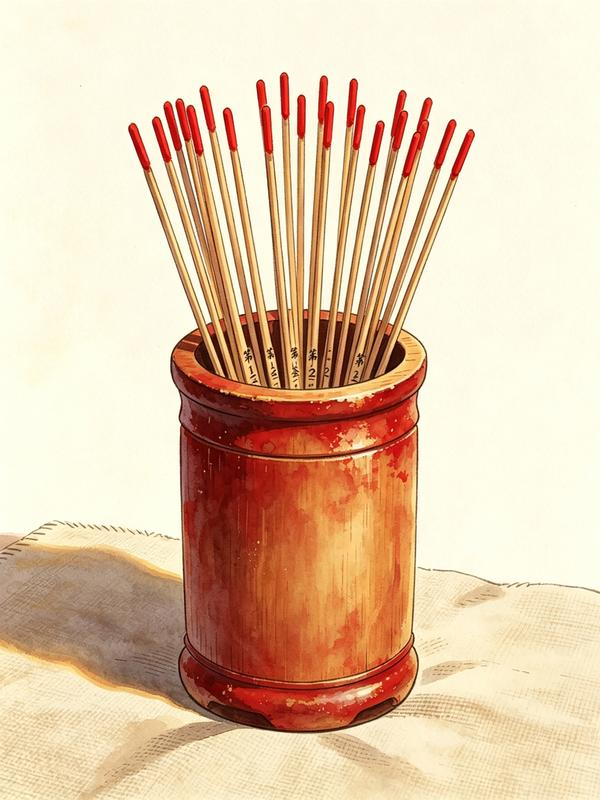

牛马力
正在收拾背包 3.00
已连续开工 0 天
牛马力正在待命
摸摸头攒路费
攒够 100 路费，就能送它出发
100路费
途经—


正在收拾背包 3.00
这是牛马力。你在工位专注，它就攒够路费替你出门，
回来寄一张明信片给你。
每天先开工打卡，再专注攒路费。
攒路费的主力是专注（25 分钟 = 25 路费）。
零花钱：按住头像来回抚摸，每次 +1 路费，每日前 30 次有效。

点一下摇签